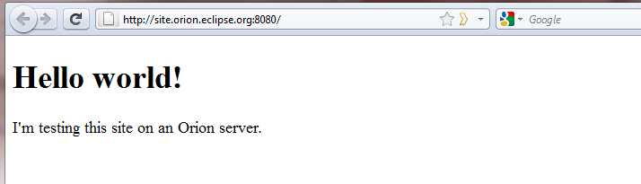

| Getting started | ||
|---|---|---|
|
|
||
| Updating this document | ||
Welcome to Orion. This page will get you started with using Orion. You can download and install Orion on your local machine or access the demo server at OrionHub.org.
We hope to inspire users to become involved in the project. The demo represents a few months of effort by a handful of developers. It is not a full-functioning development environment, but we believe it is far enough along to give you an idea of where we would like to go, and to inspire you to think about how Orion could improve your web workflows.
Note that these are very early days for Orion, and it is not usable for real work yet. See the Orion FAQ for a list of gaping holes in terms of functionality.
When you first attempt to access the Orion server, you'll be prompted for credentials.
[[Image:Orion_Logon.jpg]]
When running from your own server, you can create an account from the login dialog. If you are accessing the server hosted at eclipse.org, you will need credentials from the Eclipse Foundation. Existing Eclipse committers have been given credentials.
In Orion, each user has a virtual root folder where various folders and files can be created. These files are maintained on the Orion server. Please note that for the time being, data may be periodically deleted from the Orion server.
For demo purposes, we currently populate every user's root folder with two folders that contain some of the Orion client source code. Once you've successfully logged into Orion, you should see two folders:

To navigate the files, you may either expand the folders (using the triangles), or you may click on the folder links to drill into that folder. The breadcrumb at the top of the page allows you to navigate back up the tree.
Global commands for Orion (such as search, open resource, user management) appear at the top right of the page. Commands that operate on the navigator are located on the right side of the dark bar in the banner. Commands that apply to individual files or folders are located in the "Actions" column next to the item.
To start working with your own files in Orion, you can create a folder using the button on the right.

Once you've created a top level folder, you can create additional folders and files within that folder.
You can upload zip files from your local machine to the server using the import menu.

To import projects from Eclipse (or any other IDE, or your local file system) into Orion, you must first zip up the files you wish to import. Choose this zip file in the file selection prompt offered in the import dialog available when moving the cursor to a folder line and clicking More. (Choosing a non-zip file may break the import dialog on some browsers, see Bug 335890).

The contents of the zip file will appear in your folder in the navigator. (If you are working on the Orion demo server, you will also notice a folder associated with git inside your new folder. To configure this feature on your own localhost version of Orion, see the server administration guide.)

When you have worked with your code on Orion and are ready to export your work back to your local workstation, navigate to the folder you wish to export and choose the "Download as Zip" link.

You can use the "Favorites" icon to bookmark a folder or file in your navigator. A link to this folder or file will appear in your favorites list and can be used to navigate quickly to that file or folder.

Favorites are also suggested as move/copy targets.

We've implemented an extension point that allows a plug-in to add commands to the navigator's toolbar and local item actions. To see what plug-ins are installed in your Orion system, open the page view-registry.html on your Orion server.

The registry shows what plug-ins you have installed, and allows you to add plug-ins by typing the URL of a plug-in in the text box on the upper right. You can see that the several plug-ins that provide Orion functionality, such as file management, user management, git, jslint, are already installed. Plug-ins provide different kinds of new behaviors, or "extensions" to the system.
The "fileCommands" extension point allows plug-ins to contribute commands to the navigator. The plug-in can specify how many and what types of files it can work with. The command will be contributed in the navigator item menus.
A sample plug-in that demonstrates the different kinds of commands you can contribute is located at http://orion.eclipse.org/plugins/sampleCommandsPlugin.html. You can paste or type this URL into the registry page and press the Install button. When you reload the navigator page, you will see new commands in the item and toolbar menus.

See sampleCommandsPlugin.html for the source code.
Once you've navigated to the file you want to work with, click on its link to open the editor. You'll find that the editor supports the basics (cut/copy/paste, undo/redo) as well as your favorite text-editing features from Eclipse desktop (move up/down, copy up/down, go to line, find, incremental find). For now, most of these commands are accessible only through keyboard shortcuts, using the default keybindings in Eclipse desktop.
If you are working with JavaScript (a *.js file), the editor will syntax highlight your code. You will also see an outline of the functions in your JavaScript, as well as markers for problem areas in your code. Integration with existing web tools is an important goal in Orion, so we have implemented a plug-in that runs JSLint on JavaScript files in order to produce the outline and problem markers. The familiar Eclipse problem UI is used to display the problems in the editor. You'll see problem markers by each line of code in the left hand ruler, and overview problem markers on the right side, which allow you to navigate quickly to a problem in a part of the file that's not currently displayed.
The editor will also match brackets when you click next to a bracket, perform auto indention, and provide source-code oriented keybindings for things like toggling comments and adding/removing block comments.
We do not yet support content assist on JavaScript files.

The Orion server is Firebug-savvy, so that recent alpha versions of Firebug, together with a Firebug extension, can invoke the Orion editor to make corrections. For details about this, see the Firebug wiki.
Syntax highlighting of CSS files is also supported, but no outlining support has been provided yet. As a proof of concept, we've implemented a bare-bones content assist. In Orion, our goal is to provide the plug-in points for things like content assist and outlining, allowing plug-in developers to enhance the functionality. For now, we supply a content assist based on CSS keyword proposals. We hope to integrate existing source code analysis tools as plug-ins to enhance content assist support, outlining, and problem identification for many kinds of files.

We've implemented a simple HTML outliner based on DOM ids. (No syntax highlighting support yet).

Java syntax highlighting is also supported. However, we have not implemented any outlining or content assist. Since we are building an integrated web-based toolset, we felt it important to target first the web client languages such as JavaScript, CSS, and HTML, so we can attract members of the JS community to Eclipse. Since we are self hosting Orion development in Orion, we need the JS features first.
We've also implemented pluggable editor actions which allow third-party developers to extend the behavior of the Orion editor on the fly. For example, we've developed an Orion plug-in based on the JSBeautifier code formatter so that source code can be easily beautified. The plug-in is located at http://jsbeautifier.org/orion/m6/jsbeautify.html . Once the plug-in is installed, it will appear in the list of plug-ins. More interestingly, when you reload an Orion editor, you should see a new icon appear with the rest of the editor commands.

Once you are actively using Orion, you'll find that you want to move quickly between different resources. There are several ways to go about this. We've integrated Apache Lucene search with the Orion server and exposed it in the Orion client in several ways.
The search box in the Orion navigator will perform a global search on everything in your user workspace.

The "Open resource" dialog can be opened by selecting the search icon adjacent to the search box. This dialog lets you search for a file by name. It can use wildcards similar to the Eclipse desktop Open Resource dialog.

You can also perform a global search on a highlighted phrase from inside the editor

A nice side effect of editing source code in browser pages is being able to use browser mechanisms, such as the history, to quickly find files. If you find yourself working in the same handful of files, opening a new browser tab and typing in the filename will quickly get you there.

We intend to provide many different kinds of plug-ins for integrating Orion into open source and proprietary version control systems. Our first experiments in this area are to provide a UI for working with git repositories. For files and folders that are managed in a git repository, you will see a menu for navigating to the git status of the repository containing your file.

The git status page shows you all the files in your git repository that have changed, and allows you to stage, unstage, and commit changes. You can also compare the content of the files.

A side-by-side compare view is also provided. This will evolve into a merge view over time.

We are working on additional pages for cloning, viewing history, and pushing and pulling changes. For self-hosted development, we typically have an additional git client installed on the workstation. That client is used to push and pull changes, while the Orion UI is used to stage and commit changes.
Orion can create "sites" for testing an application developed with Orion as a stand-alone website. Click the Sites link on the Orion toolbar. This takes you to a page where you can create, edit, delete, or launch web sites for testing. Sites will be launched either as a subdomain of the Orion server, or at an alternate IP address when running the server locally.
You create a site by pushing the "+" button and supplying a name for your site. Your new site will appear in the table, with commands for starting, stopping, or editing the site.

Click on the new site to go to the site configuration page. Under the "Mappings" table, click the "Add..." button. This will give you a row in which you can define a mapping from a folder in your Orion user workspace to the location on the server where the folder will be deployed. The following screenshot shows us mapping the "MyWork" folder to the root of our new site. (The target column shows Orion's internal name for the mapping, and may be different in your installation.)

Click on the "Save" button to save the site configuration. Go back to the list of site configurations and click the start button (
 ) next to your new site configuration. Now you should be able to view your site at the address shown in the "Status" column. In our case, it's
http://site.orion.eclipse.org:8080/.
) next to your new site configuration. Now you should be able to view your site at the address shown in the "Status" column. In our case, it's
http://site.orion.eclipse.org:8080/.

Since our "MyWork" folder has an index.html file in it, we see the contents of that file when we visit http://site.orion.eclipse.org:8080 in our web browser.

At this point, we can do incremental development by using the Orion editor to change the files in our "MyWork" folder, and then simply reloading http://site.orion.eclipse.org:8080 to see the changes.
If you are running your own server and you wish to set up hosting on a subdomain, a different IP address, or if you're running Mac OS X, you'll have to supply some more information to the Orion server. See Configuring virtual host names for more detail.
|
|
||
| Updating this document |